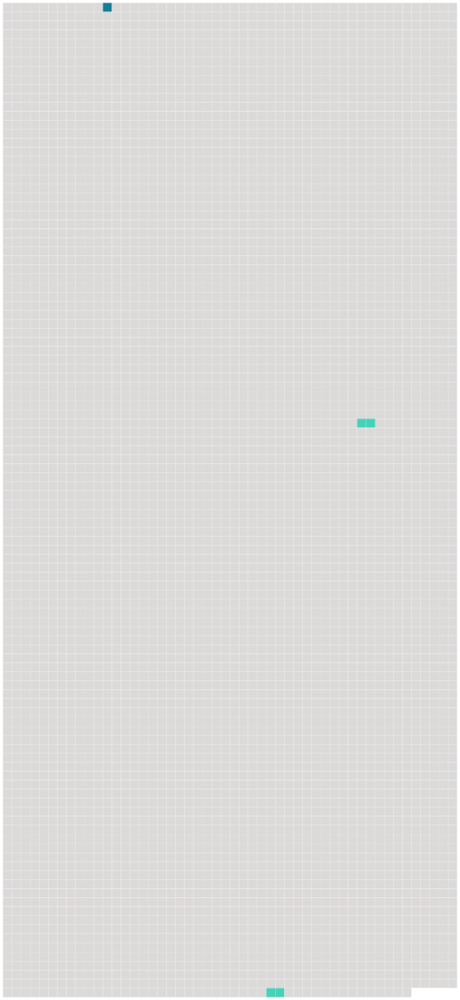

Longueur nb maillons : 3 mentions |
|
Voici une heure qu'il a eu une violente crise de [toux] , et il a encore craché du sang. [106 phrases] Imaginez que vous voyez mon pauvre mari, lui qui a tout quitté pour venir chercher un climat plus doux, emprisonné entre ces murailles hautes et humides, exposé au froid et au vent, qui le pénètrent jusqu'aux os ; et impossible d'avoir du feu, si ce n'est celui de la cuisine, fait avec du charbon de terre, dont la fumée l'oppresse, lui serre la poitrine jusqu'à lui donner presque des convulsions ; et pas une goutte de sirop, rien pour calmer [cette toux] [147 phrases] avec un regard vers le ciel : c'est, le seul mot de plainte que j'ai jamais entendu de lui ; bien qu'il soit épuisé, presque réduit à rien, par les rapides progrès d'un mal dont la nature même est de ne pas lui laisser de trêve entre l'irritation de [la toux] , les frissons, les suffocations, les défaillances, la faiblesse continuelle. |
 |
Il est possible de télécharger la ressource sur la page Ortolang |
Si vous avez des questions ou vous voyez des erreurs, merci d'envoyer un mail à silvia.federzoni89@gmail.com |